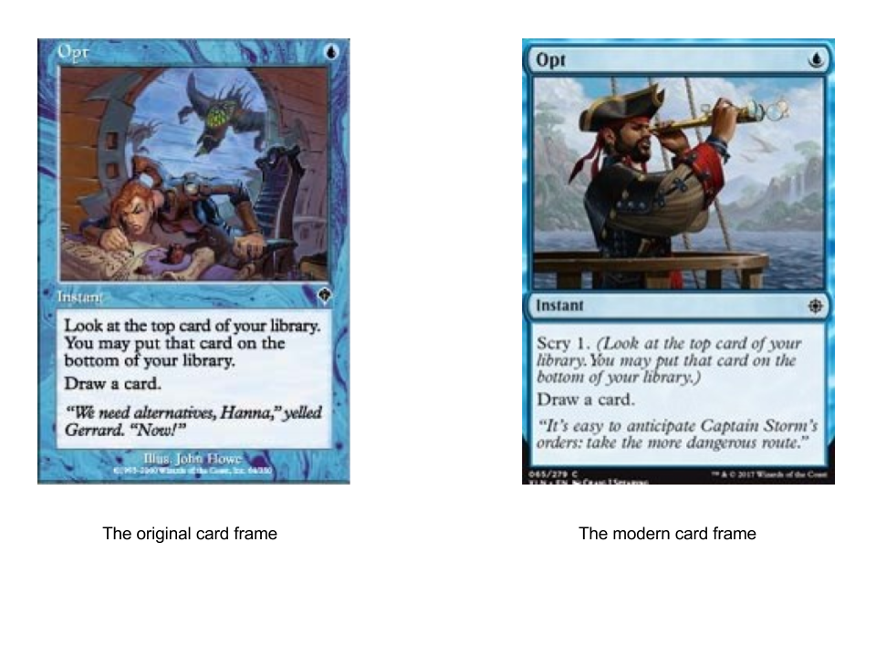
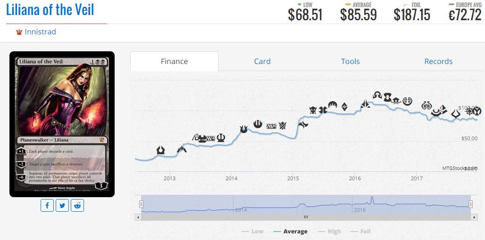
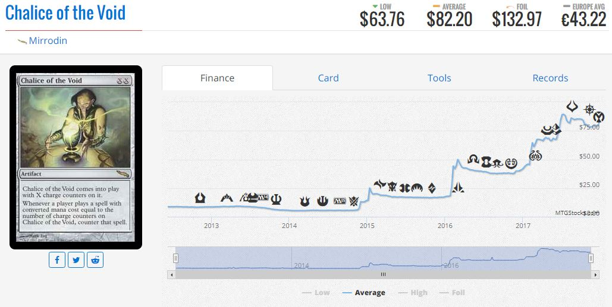
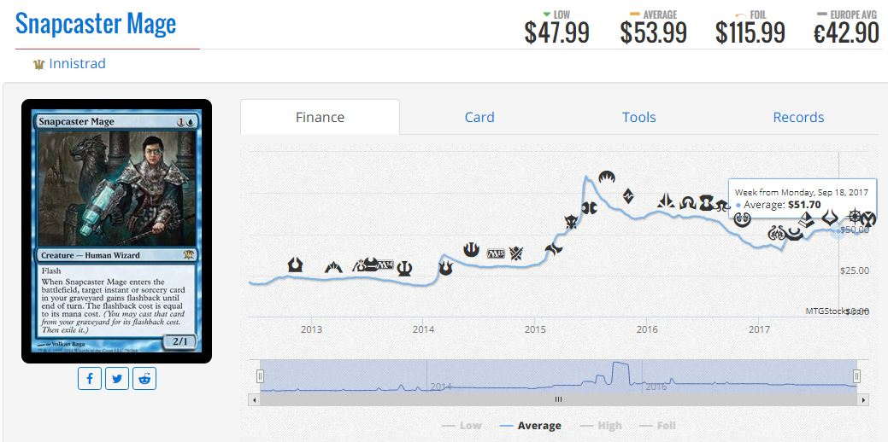
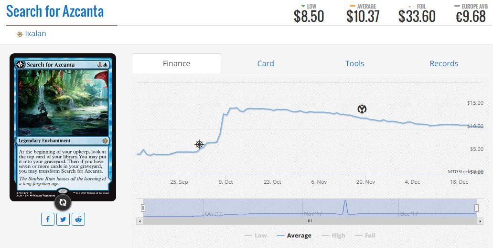
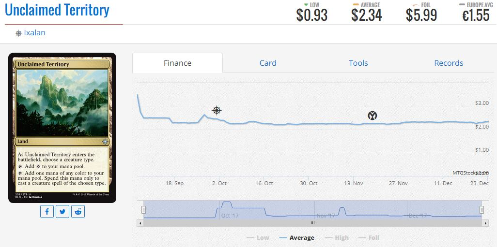
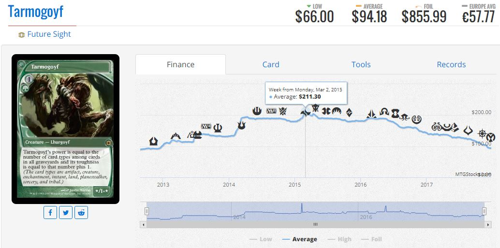
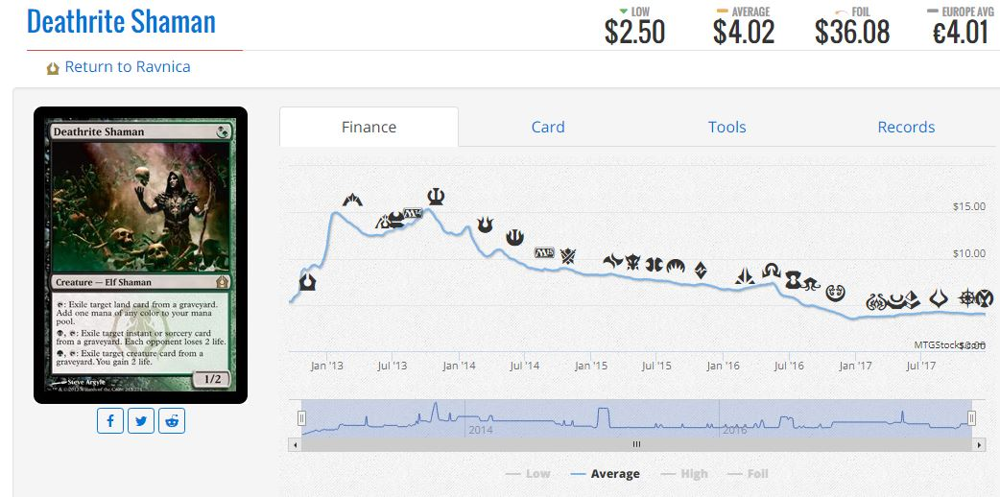
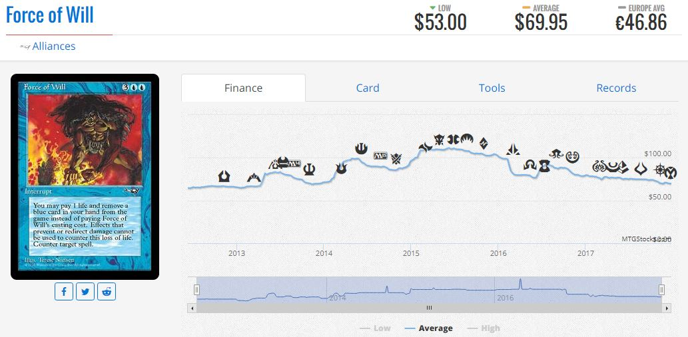
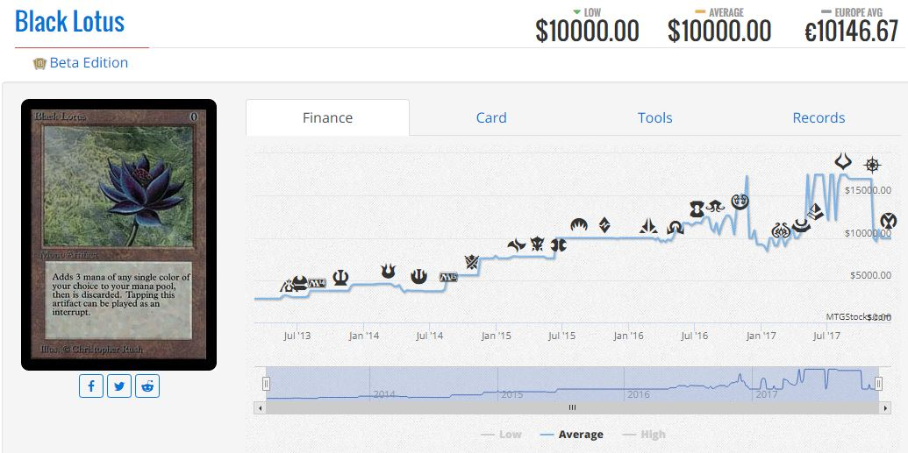

Introduction
If the Standard format is chaotic and ever changing, eternal formats are its opposite; consistent and steadfast, with new cards trying their best to break their way into existing decks, and most failing. These formats feature cards from all of Magic’s illustrious 25 year history, and with a massive card pool of more than 16000 cards to choose from to put into your 60 card deck, only the absolute cream of the crop are playable in the cutthroat world of eternal magic. However, the exclusivity of eternal playable cards makes them the most sought after, and thus the most expensive, of all Magic cards. The rarest, most powerful cards can fetch upwards of $20,000 on the secondary market. Here we’ll examine the financial trends of each of the three major non-rotating formats, Modern, Legacy, and Vintage.
Modern
Modern is the least expensive and most tumultuous of non-rotating formats, because as opposed to its counterparts that allow cards from all of Magic’s history, modern allows cards from 2003 onward, when the designers switched from the original frame to the “modern” frame (hence the name modern).
Because of this more recent card pool, a lot of the completely broken cards printed in Magic’s formative years are not allowed, making for a cheaper, more balanced format that newer cards are more likely to make a splash in. Due to the constantly growing playerbase of Magic, modern legal sets have a higher print run than older ones, and thus modern legal cards are in higher supply than older cards. This relative accessibility is a double-edged sword however; vastly more people play modern than legacy or vintage due to its lower entry price, making modern’s staple cards in higher demand than any other format, often including standard.

These cards see play in a variety of decks in modern, legacy, and vintage, which makes them a safer investment than standard cards as they will never rotate out of these formats. While there are fluctuations due to play rates, the only things that can definitively affect the prices of most modern staple cards are reprints and bannings. Modern playable cards are often at their cheapest while they are in standard due to the large supply of circulation, making speculation on what cards will be played in eternal formats popular among prominent traders.
So far, the most played cards in eternal formats in Ixalan are Search for Azcanta and Unclaimed Territory, and as can be seen by other modern staples, picking them up now may be the correct decision to avoid paying a hefty price tag for them in the future. These cards, after their initial hype has died down, have completely stagnated in price, making them a fairly low risk pickup, which given the other examples, has the potential for a massive payoff.
 Now, this isn’t to say new cards cannot have a massive effect on modern. The recent printing of Fatal Push, one of the most efficient removal spells in recent memory, has contributed to the removal of medium sized creatures from the format. What once was a format defining card and famously the most expensive in the format, Tarmogoyf, all but vanished from the format overnight due to the printing of Fatal Push. This is proof that new cards can and do have a massive effect on Modern, just not as much as can occur in Standard.

Legacy
Legacy is a format that allows cards from all of Magic’s history, but has a carefully curated list of banned cards that keep the power level of cards available in check. Many people cite legacy as the “perfect” Magic format, as it has a wide variety of playable decks, allows almost all cards, and remains at what many people deem the “correct” power level by banning a lot of the cards printed in the first years of Magic, when the game developers largely had no idea what they were doing. However, the high entry price into the format, with top tier decks often costing more than $2000, makes it a less played, and less in demand format than modern. This means the big money cards in Legacy are often ones that were printed before the modern card frame, when print runs were much smaller and the supply of the cards is much lower. For instance, despite the fact that Deathrite Shaman is one of the most powerful creatures in the format, because it was printed in a fairly recent and heavily opened set, it is a relatively low price. Cards that see similar play rates such as Force of Will are much pricier because of their much lower and older print runs.
 Unfortunately, aside from Search for Azcanta, which we have already covered, Chart a Course, an uncommon with little value, and some sideboard options such as Shaper’s Sanctuary, no currently valuable Ixalan cards are seeing any significant play in Legacy.
Vintage
Vintage is the most exclusive, and by far the most expensive of all of Magic’s constructed formats. The average modern deck will set you back around $500-$1500, and the average Legacy deck $2000-$3000. The average Vintage deck costs around $20000. No, I didn’t accidentally put an extra zero in there. Vintage allows all cards from the entire history of Magic, and instead of a ban list has a restricted list, which means instead of outright banning blatantly overpowered cards such as Ancestral Recall, decks can only play a maximum of one of them in each deck instead of the standard limit of four. The source of most of the monolithic price tags of Vintage decks are their inclusion of the so-called “Power Nine” cards, a set of nine cards printed in the Alpha Beta, and Unlimited versions of the game, the very first expansions, that were so absurdly powerful they were removed from the game upon the official release of Revised edition. Each of these cards fetches between $1500 and $20000 depending on the printing, making the barrier to entry into the format so massive that only a select few players can competitively play Vintage. Due to the extremely powerful nature of Vintage, it seems unlikely any Ixalan cards will see play in Vintage.
Copyright 2017 Ian Rickles